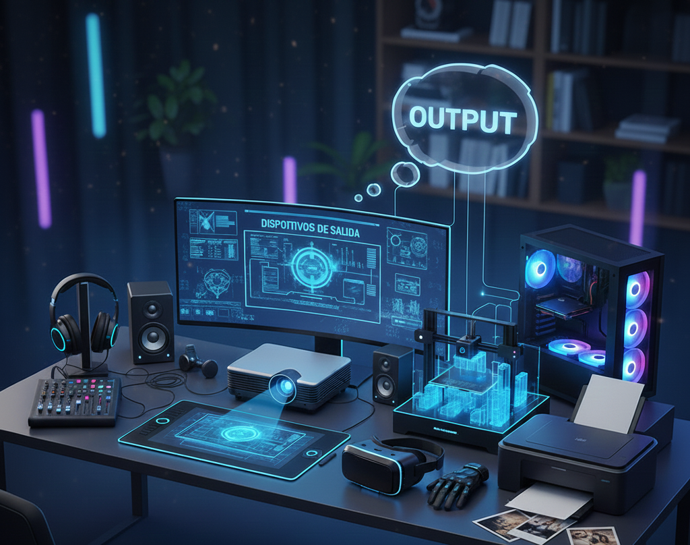
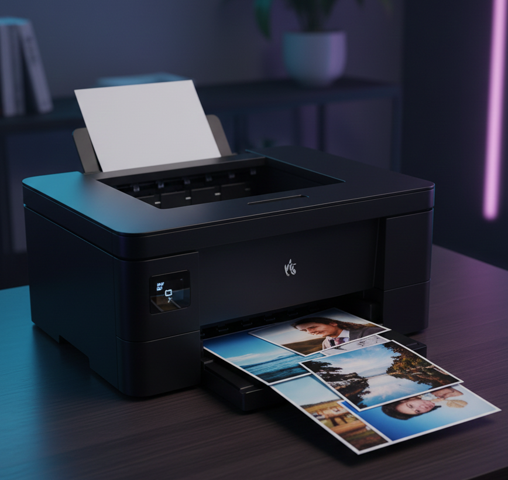
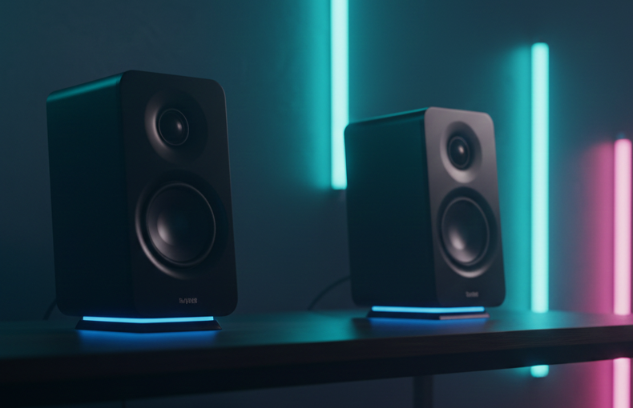
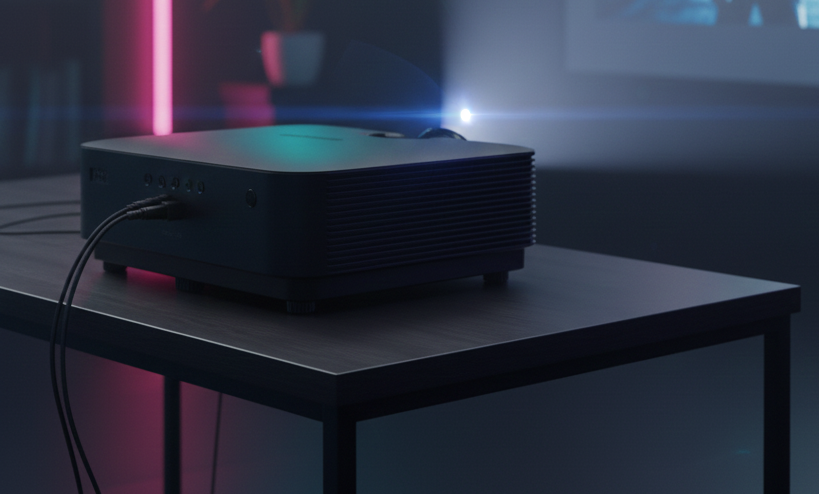

Definición de Dispositivos de salida
Son aquellos componentes del computador que muestran, proyectan o reproducen la información que la computadora procesa. Gracias a ellos podemos ver, escuchar o recibir los resultados de lo que hacemos en el equipo.

Principales dispositivos de salida
Monitor
El monitor es el dispositivo de salida principal del computador, ya que permite visualizar toda la información que este procesa. En su pantalla se muestran textos, imágenes, videos y gráficos. Existen monitores de diferentes tipos, como LCD y LED, que ofrecen buena calidad de imagen y colores más nítidos. Su tamaño se mide en pulgadas y mientras más grande es, más espacio visual tiene el usuario para trabajar o estudiar.
Impresora
La impresora convierte la información digital en documentos físicos. Gracias a ella se pueden obtener en papel tareas, trabajos, imágenes o guías. Las impresoras de inyección de tinta son comunes para el hogar y la escuela, mientras que las de láser son más rápidas y económicas para grandes cantidades de impresiones. También están las impresoras multifunción, que permiten imprimir, escanear y copiar documentos.

Parlantes
Los parlantes, también conocidos como altavoces, reproducen el sonido generado por la computadora. Permiten escuchar música, videos, explicaciones y otros contenidos auditivos. Algunos equipos tienen parlantes integrados, mientras que otros utilizan altavoces externos de mayor potencia y calidad. Son muy útiles para presentaciones, actividades grupales o videos en el aula.

Auriculares
Los auriculares permiten escuchar el sonido de forma individual y privada. Se pueden conectar por cable o mediante Bluetooth si son inalámbricos. Muchos incluyen micrófono, lo que los hace ideales para clases virtuales, reuniones o actividades que requieren interacción. Además, ayudan a estudiar o trabajar sin interrumpir a las personas que están alrededor.
Proyector
El proyector muestra la imagen del computador ampliada en una pantalla o pared, lo que facilita que varias personas puedan ver el contenido al mismo tiempo. Esto lo convierte en una herramienta muy usada en clases, exposiciones y presentaciones. La calidad de la proyección depende del brillo y la resolución, factores que influyen en qué tan clara y nítida se ve la imagen.
